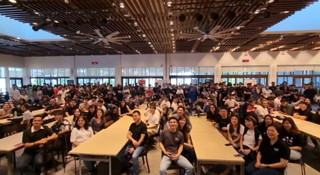
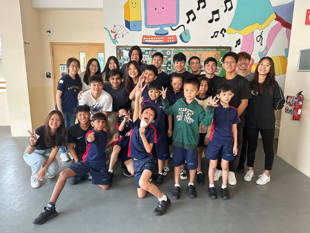
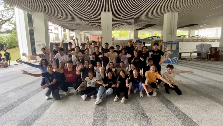

Student Development
Welcome to the Student Development Wing, where three cells - Academic Liaison, Community Engagement,
and Rag & Flag - work together to create enriching experiences for every student in the School of
Computing. Our ultimate vision is to empower students in shaping their academic and community interests.
Emphasising on holistic development, we curate a vibrant environment that allows students to embrace their
student life fully, participating in a range of events and initiatives.
If you are enthusiastic about providing students with valuable chances to excel in all aspects of education
at the School of Computing, the Student Development Wing is an excellent avenue for you to explore. Join us
in our mission to foster a well-rounded education and create a lasting impact on the lives of our students.
Introduction
In your role as the Vice President of Student Development [VP(SD)], you lead the Student
Development Wing, encompassing three Cells: Academic Liaison, Community Engagement, and Rag & Flag.
Within these cells, we plan a series of exciting events, providing School of Computing students with
invaluable opportunities to shape their academic and community interests. Our focus is on fostering
holistic education, empowering students to thrive in all aspects of their student life. Embrace the
journey of personal growth and enrichment as you engage with the diverse offerings within the Student
Development Wing.
Roles
The VP(SD) is primarily in charge of carving out the overall vision of the wing, making
sure all decisions that the faculty makes are in the best interest of the student body. While the VP is
more involved in the planning process, the Directors play a supporting role in ensuring that these plans
are realistic, executable and deliverable.
As VP(SD), you would be supporting your cell's events and planning for any new initiatives you wish to
take. You oversee all components of the wing from Finances to Logistics ensuring everything runs
smoothly by making sure your Directors and Project Directors are well aware of the deliverables to meet.
Experience
As VP(SD), my journey has been immensely fulfilling, as I had the privilege to actively contribute to
the all-rounded education of students at the School of Computing while highlighting the significance of
community engagement. One of the most transformative aspects of my tenure was the opportunity to
interact and collaborate with a diverse array of stakeholders. From students and faculty to staff and
community partners, each interaction enriched my understanding of various perspectives and needs.
Engaging with these stakeholders not only allowed me to implement impactful initiatives but also
broadened my own horizons. It was a journey of learning and growth, as I discovered the power of
effective communication and the art of building strong relationships.
As I faced challenges and navigated through various situations, I observed my personal growth take
shape. Maturity became a natural byproduct of my experiences, and my confidence in my leadership
abilities soared. I discovered the value of resilience and adaptability, traits that proved invaluable
in managing diverse teams and tackling complex problems.
Moreover, the role of VP(SD) has taught me the importance of staying true to my vision while being open
to feedback and collaboration. Embracing different perspectives and ideas allowed me to refine my
initiatives, making them more effective and inclusive. My time as VP(SD) has instilled in me a lifelong
commitment to personal and professional development.
Introduction
The Academic Liaison Cell Functions as a bridge between student body and the school with
regards to Academic matters and facilitates the academic ambitions of the club.
It also hosts Academic events to allow students to explore new avenues and better formulate their
academic interests. We have 4 main events, Career Launchpad meant to provide students with informative
talks and webinars from external organizations, Lifehack which is an annual hackathon hosted by NUS
Computing club, Mock Practicals which helps students prepare for their practical exams and lastly Winter
workshop which provides workshops to students for higher level modules.
We will go beyond to provide students with all the opportunities in honing their technical skills and
being ever ready for a career in today's transformative tech industry.
Roles and Experience
[Bryan, Director]:
It’s definitely been an eventful and memorable journey. Working with my fellow peers in Computing
Club has been a great experience and contributing back to my faculty has been extremely meaningful to
me. Throughout, I had my fair share of fun and work, made new friends and I am glad to have had this
opportunity to organise various events for my fellow peers.
[Tabriz, Deputy Director]:
My journey within has been nothing short of fruitful. Throughout my time in Computing Club, I had the
opportunity to make many new friends, from my peers in Computing Club to students in School of
Computing. I’m also glad to see the students of the School of Computing come together and participate in
our events. It was very heartwarming to see how the work we have done has positively impacted the
student body.
Events
Lifehack'23
NUS Students’ Computing Club’s flagship hackathon. Lifehack gives students the opportunity to come up with their very own innovative solutions to real world problems. This year, we hosted about 450 participants with a prize pool of $16,000. It was an event not to be missed.
Career Launchpad 2023
Career Launchpad aims to propel students into the internship industry. This year, we invited notable speakers including NCS, TikTok, P&G, Creddit Suisse and NUS Overseas Colleges. The event hosted over 400 participants that spanned across 3 days. Throughout, students were able to learn what it was like interning at these companies, learn relevant technical skills and network with others.
Winter Workshop 2023
Winter Workshop is a long running tradition that helped freshmen ease into their university curriculum. This year, we conducted workshops for java, CS2040S & CS2030S. Students were able to get a headstart into these curriculum before the heavy semester began, which allowed them to have a smoother sailing semester ahead.
Summer TechFest 2023
For it’s second year running, Summer TechFest was initially a pilot project in 2022 and we plan to make it our flagship event in the coming years. Through a 10 week long summer course, students were able to get their hands on Software Engineering Practices as a team. Teams were required to develop a software application and were given mentorship by the senior mentors.
Soc.acads
A goal of this year was to have a bigger outreach to the student body, providing them with opportunities to participate in hackathons, Industry talks and company events. As such, we started this initiative of communicating such opportunities to the student body through our new instagram account, soc.acads. This initiative was an overwhelming success, having gained 450 followers in the academic year and we plan to continue this initiative in upcoming years.
Introduction
The Community Service Cell aims to provide an avenue for students to support beneficiaries
in need and incorporate our knowledge and technology to help those in need. Under our cell, we help to
oversee the Community Engagement Initiatives under NUS Students’ Computing Club. These include our
Children service project, Elderly service projects and a new project, project Sabai.
With an overall aim of promoting a culture of giving students a platform to contribute to the society,
we hope to instil in students an interest and commitment towards the various community segments in
Singapore.
Roles
As the community engagement director, your role includes recruiting suitable PD and VPD that will lead the projects. You have to ensure that the timeline of proposals are met, and provide assistance to PD and VPD where needed.
Experience
Joining Computing Club and managing projects is something new to me and I have definitely learnt new things from it. My favorite experience was getting to travel to Cambodia for project Sabai. I got to interact with the kids there and it was really unique experience.
Events
Elderly Service Project
The elderly service committee aims to better connect with our elderly and work towards a more inclusive society amidst our increasingly digitised world. This year, we partnered with NTUC Health to organize workshops to educate our elderly on some of the common utility applications such as google maps and delivery apps. The workshop also introduced them to the world of social media.
Children Service Project
The Children Service Committee aims to empower children from underprivileged backgrounds to kickstart their interest in programming. We organized a workshop, CodeCamp, where SOC students were given the opportunity to educate children on the fundamentals of programming and develop their interest through meaningful enrichment provided.
Project Sabai
Project Sabai is a collaboration with YLLSoM. We aim to provide healthcare to villages and schools in Cambodia, through the form of developing a platform that helps YLLSoM students to track and record their patient’s medical details. We develop features of the platform requested by YLLSoM students.
Introduction
The Rag and Flag cell, like its name suggests, is in charge of organising both
Receiving and Giving (RAG) and Flag events, both of which are NUS-organised annual charity projects.
Flag is a year-long fundraising event where our committee organises events where we sell merchandise,
engage beneficiaries in person, or even take to the streets to raise funds for the beneficiary we
are partnered with, which is MINDS Fernvale Gardens, a school which caters to the needs of the
intellectually disabled.
Rag is intertwined with Flag, in the sense that it is an event which is designed to give back to the
donors which supported Flag, and is designed to accomplish this by putting up a stunning performance
at UTown Green, accompanied by floats and dancers, which are dressed in tailor-made costumes.
If you want to be a part of one of NUS’ flagship orientation programmes, as well as to make a difference
in the lives of both our beneficiaries and freshmen, the Rag and Flag cell provides an excellent
means to do so.
Roles
The role of the Rag and Flag cell is to plan and execute Rag and Flag related events, and
provide a means for students to organise activities which give back to the disadvantaged in society,
show appreciation for our generous donors, all the while providing a meaningful orientation experience
for freshmen doing so.
As Rag and Flag director, you would have to recruit suitable project directors and subcommittee members
for both Rag and Flag, managing both events on a larger scale, such as deconflicting events with other
cells, and ensuring that your subcommittee members remain on task.
Experience
My Computing Club journey has contributed immensely to my personal growth. From having to resolve interpersonal conflicts, building up the confidence to lead, pushing myself out of my comfort zone to network with others and working under time pressure, it might not immediately be obvious why people would take up this role. However, I would argue that it really built up my capacity to lead and gave me plenty of leadership experience, given the fact that I have not had the chance to lead in such a manner before.
Events
Valentines Day Sales
During the Valentine’s day period, the Flag committee took preorders for flower domes, stickers, and opened a photobooth in the spirit of Valentine’s day, raising money which went towards MINDS Fernvale Gardens, our partnered beneficiary.
Beneficiary Engagement Day
On 2 separate days, the Flag committee and over 20 unique student volunteers went down to MINDS Fernvale Gardens school in order to engage them by teaching them coding and graphic design with Canva, providing them with an enriching and educational experience.
Flag Day
On Flag day, around 20 unique volunteers took to the streets to raise funds for Community Chest and its partnered organisations, raising a grand total of just under $1350.
Flag Carnival
On Rag day, the Flag committee opened a booth in collaboration with Burnt Cones ice cream, selling cups of ice cream as refreshments and raising money for our partner beneficiary in the process.
Rag Cohesion
To welcome incoming freshmen who have joined Rag, the Rag committee organised a cohesion with around 120 participants, where the freshmen and committee members bonded over a night of food, drinks and laser tag!
Rag Day
OOn the 12th of August, Rag day, the efforts of all 170 odd committee members and freshmen bore fruit as our Rag performers took to the stage and impressed the audience with the performance they had worked so hard to perfect over summer.
